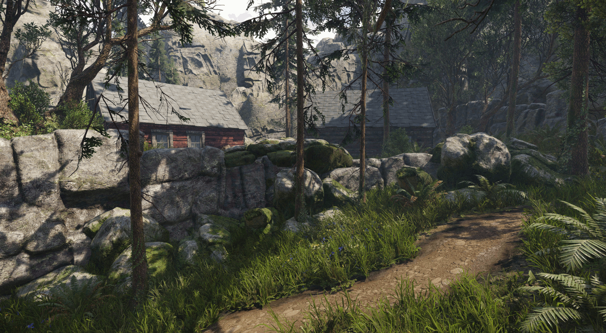
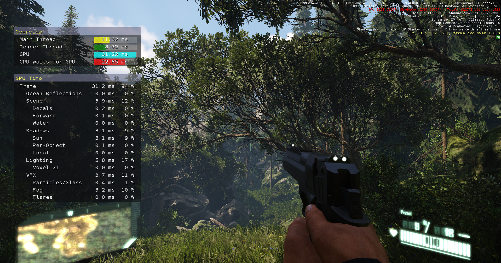
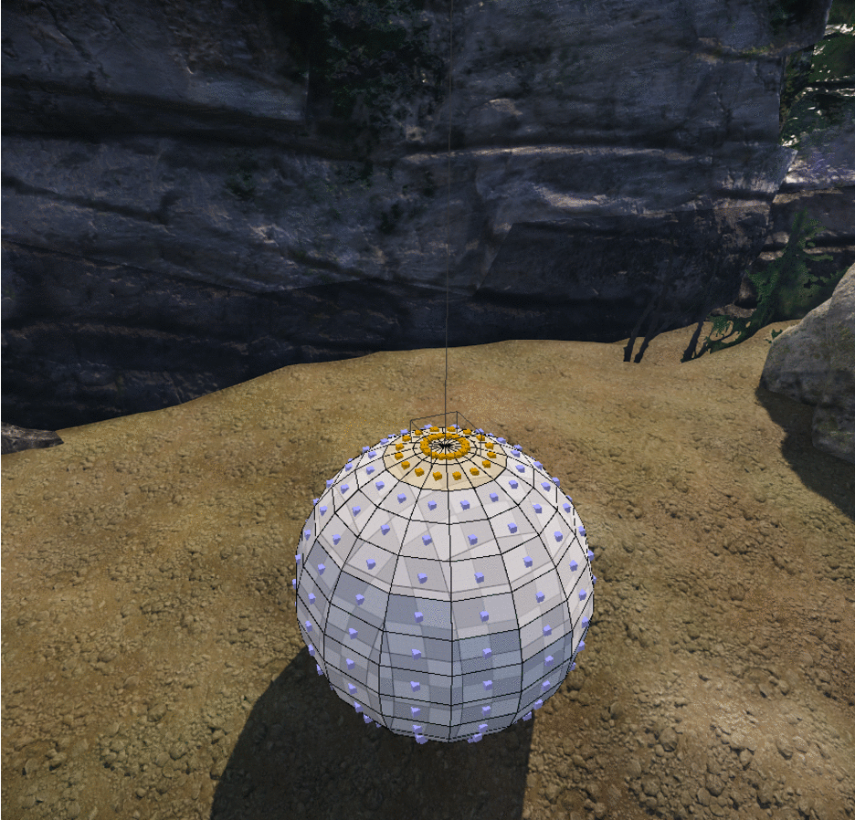
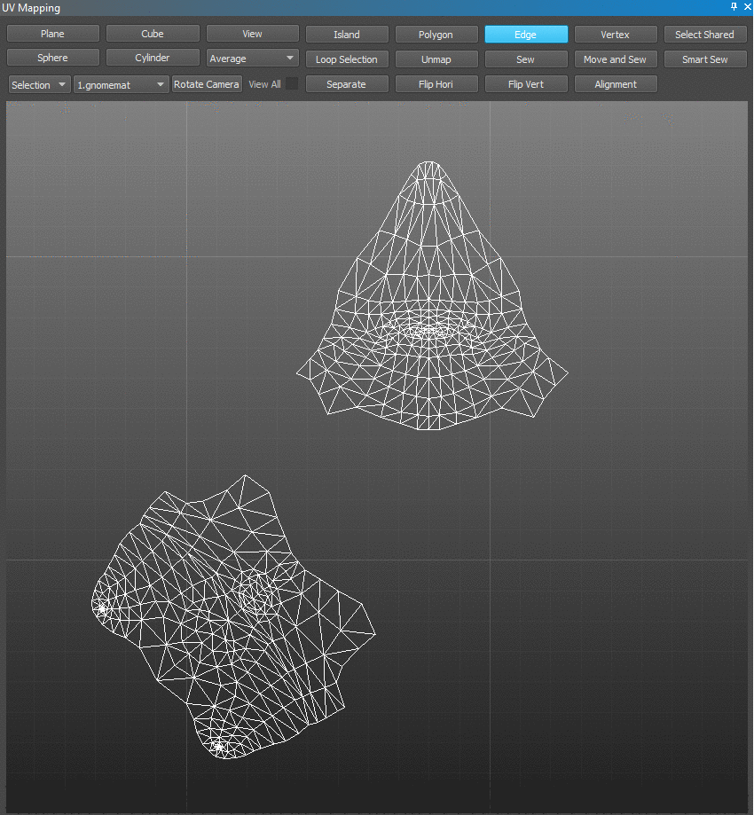
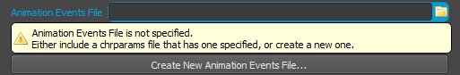
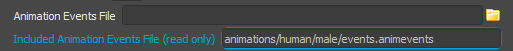
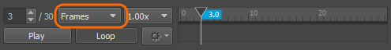
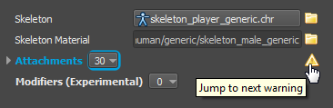

Обзор
Основные моменты выпуска
Ambient Occlusion на основе карты высот
С новым Ambient Occlusion на основе карты высот (Карта высот AO), CRYENGINE 3.8.4 представляет высокоэффективную опцию для получения крупномасштабной внешней окклюзии на открытом воздухе без необходимости какого-либо предварительного запекания. В сочетании с направленной окклюзией экранного пространства (SSDO) карта высот AO предоставляет дополнительные сигналы затенения для улучшения восприятия глубины сцены. Основное внимание в этом методе уделяется высокой производительности и обеспечению его пригодности для виртуальной реальности (VR) и консолей (приблизительно 0,3 мс на PC).

Новый профилировщик конвейера рендеринга
В версии 3.8.4 представлен новый унифицированный профилировщик конвейера рендеринга, который предоставляет информацию из различных итераций наших предыдущих внутренних инструментов профилирования в улучшенном и понятном интерфейсе. Профилировщик можно включить с помощью r_profiler 1.

Изменения интерфейса кода
См. Важно 3.8.4 Изменения кода и данных статья для получения дополнительной информации
Редактор
Генеральный редактор
- Новый: (FBX Экспортер). Добавлена поддержка цветов вершин и нормалей.
- Новый: (FlowGraph) Транспортное средство. Узлы FG для управления и выбора видов мест.
- Рефакторинг: Sandbox Зависимость PRT теперь компилируется через модуль WAF.
- Оптимизированный: Разрешить использование веревок нулевого радиуса для специальных целей.
- Исправлено: (FBX Экспорт) Экспорт цвета вершин. Поменяйте местами красные и синие компоненты (были заменены в сетке рендеринга).
- Исправлено: убедитесь, что входные данные перенаправляются правильно при использовании режима AI/Физика перед игровым режимом.
- Исправлено: предупреждение при запуске игрового режима, когда активны правила многопользовательской игры и нет точек появления.
- Исправлено: Для инструмента Unlink в Sandbox — перемещает содержимое префабов.
- Исправлено: где элемент управления PropertyItem не распознает флаг принудительного изменения.
- Исправлено: Интеллектуальный диалог открытия файла — теперь возвращает пути к игре в формате, аналогичном обычному «пользовательскому» диалогу открытия файла (сравните с CCustomFileDialog::GetFilePath()).
- Исправлено: Трансформация повреждена при связывании префаба с объектом.
- Исправлено: Исправлена ошибка, из-за которой связанные префабы плохо экспортировались.
- Зафиксированный: Возможный сбой и утечка памяти в CBreakpointsTreeCtrl.
- Исправлено: Выравнивание префаба по сетке — внутренние объекты больше не выравниваются.
- Изменено: Не принудительно обновлять флаг видимости дочерних объектов в отношениях родитель-потомок.
- Изменено: AI NavMesh операция «Запросить полную перестройку MNM» — теперь перестройка продолжается независимо от того, какое значение установлено для «Непрерывного обновления».
Designer Tool

Выдавить несколько
- Новый: добавлен инструмент ExtrudeMultiple. Руководство
- Рефакторинг: HeightManipulator.
- Рефакторинг: коды ConeTool были переработаны путем повторного использования кодов CylinderTool.
- Рефакторинг: xxxDesignerEventxxx переименован в xxxDesignerNotifyxxx.
- Исправлено: добавлен предиктор для сравнения двух строк const char* в список параметров template класса uiFactor.
- Исправлено: Ошибка сбоя при входе в объем клипа и выходе из него — исправлена путем удаления переменной указателя редактора дизайнера в MainPanel и SubPanel. Теперь использует глобальный указатель.
- Исправлено: Ломаные полигоны — возникают, когда полилинии рисуются на неплоском многоугольнике.
- Исправлено: по умолчанию не отмечена ошибка с флагом отбрасывания тени.
- Исправлено: перемещение точки поворота назад после преобразования гизмо и выхода из инструмента поворота.
- Исправлено: Разбитый видовой экран — после переключения видового экрана на ортогональный вид с помощью всплывающего меню, а затем обратно в перспективу.
- Исправлено: Ошибка только в позиции ResetXForm.
- Исправлено: ошибка, вызванная перемещением элементов (вершин/ребер/граней) в зеркальном режиме.
- Исправлено: Невозможно выбрать вершину.
- Изменено: добавлена панель инструмента «Выдавливание», включающая параметры масштабирования и выхода из краев петли. Также добавлены справочные сообщения.
- Изменено: Применен манипулятор смещения к инструменту выдавливания.
- Изменено: OffsetManipulator был реализован для инструмента смещения.
- Изменено: Индивидуальный PivotPanel инструмента Pivot был заменен на PropertyTreePanel.
- Изменено: цвет номера оси Z стал ярче и теперь его легче читать.
- Изменено: Название камеры эксклюзивного режима изменено с «Камера Crydesigner» на «Камера эксклюзивного режима».
UV Редактор картографии

Умное шитье
- Новый: SmartSew добавлен. Руководство
- Новый: LoopSelection добавлен. Руководство
- Исправлено: Ошибка, вызывающая сбой в Windows 8.1/10 при развертывании полигонов в редакторе картографирования UV.
- Исправлено: Ошибка сбоя при загрузке другого уровня при открытом редакторе карт UV.
- Исправлено: Ошибка с открытием редактора карт UV при создании нового уровня.
- Изменено: методы развертывания перенесены из инструмента картографии UV в редактор карт UV.
- Изменено: включена автоматическая очистка неиспользуемых развернутых полигонов.
- Изменено: добавлена комбинация клавиш F5 для очистки неиспользуемых полигонов UV.
- Изменено: Улучшена привязка вращения, чтобы сделать определение вращения мыши более точным.
- Изменено: Улучшена развертка плоскости, теперь сохраняется соотношение исходной ширины и высоты.
Trackview
- Новый: Окно свойств ключей Trackviews — теперь можно правильно отображать значения ключевых кадров Pos и Rot.
- Исправлено: параметры кат-сцены «Отключить игрок» и «Без возможности пропуска».
- Исправлено: дочерние объекты остаются навсегда скрытыми при перемещении за пределы дорожки видимости.
- Зафиксированный: невозможно вручную установить значение в свойствах ключа просмотра трека на то же значение, которое было введено ранее.
- Исправлено: Маркеры начала и остановки игнорируются после сохранения уровня.
Рендерер
Общий рендерер
- Новый: унифицированный профилировщик конвейера рендеринга с улучшенной совокупной статистикой (новый CVar r_profiler, который заменяет r_artProfile, r_stats 15-17 и r_showmt).
- Новый: Динамические тени на расстоянии.
- Новый: поддержка суперсэмплинга в Game Launcher.
- Новый: Temporal AA теперь работает с двойным стереорендерингом и VR.
- Новый: Карта эмиттанса имеет собственный слот и параметр гаммы, позволяющий увеличивать диапазон.
- Новый: Интенсивность излучающих материалов теперь указывается в килонитах (ккд/м2), а также применяется цвет излучения материала.
- Рефакторинг: разделены 3 значения разрешения в соответствии с различными фазами и режимами рендеринга (разрешение рендеринга для 3D, собственное разрешение для увеличения/уменьшения масштаба и собственного пользовательского интерфейса, разрешение обратного буфера для нескольких представлений, таких как комбинированное стереоизображение).
- Исправлено: Поведение r_ShadowGenDepthClip.
- Исправлено: GPU и время рендеринга CPU занижены.
- Исправлено: перечислить только поддерживающие функции GPU уровня 11.0 и выше.
- Исправлено: шрифты теперь отображаются в правильном положении и с собственным разрешением вместо разрешения рендеринга.
- Исправлено: Убедитесь, что световая матрица ортонормирована (когда свет прикреплен к объекту с масштабированием).
- Исправлено: Альфа-тестирование не работает при прямом проходе.
- Исправлено: представления отладки, отображаемые на дополнительных видовых экранах.
- Исправлено: SS Отражение мерцает, когда вторичное окно просмотра открыто.
- Исправлено: Восстановлен вид трафарета глубины во время рендеринга в исходную цель (исправляет маски Scaleform, не работающие в главном меню).
- Исправлено: Поведение флага материала «Нет тени» на персонажах, веревках и дорогах.
- Зафиксированный: замена BGR при использовании текстур RGB.
- Исправлено: отображать сообщение об ошибке и корректно завершать работу при запуске редактора в системе без совместимого GPU.
- Исправлено: Улучшено затенение растительности — исправлены разрывы затенения и чрезмерно сильное усиление зеркального отражения на плоскостях листвы.
- Изменено: проверьте GPU в редакторе и не разрешайте запуск приложения, если подходящий GPU не найден.
- Изменено: отображать более точное сообщение об ошибке при обнаружении неподдерживаемого GPU.
- Изменено: добавлена подсказка для графических драйверов о необходимости предпочитать высокопроизводительные устройства в случае отсутствия профиля приложения.
- Изменено: добавлен паттерн TAA с 3 семплами.
- Изменено: Стереоустройство по умолчанию установлено на «Нет» — для экономии памяти.
- Изменено: Карта непрозрачности декалей теперь использует непреобразованные координаты текстуры.
SVOGI
- Новое: Трассировка глубины экранного пространства может быть дополнительно интегрирована в код трассировки вокселей, что позволяет частично закрывать невокселизованную геометрию.
- Новое: Солнечная инъекция в режимах 1-2 (обычно основанная только на трассировке вокселей) может быть дополнена RSM, что обеспечивает более точную инъекцию.
- Новое: Добавлен новый режим LowSpec — новый режим LowSpec 1 находится между старыми режимами 0 и 1, что обеспечивает хороший баланс между качеством и скоростью.
- Исправлено: Вылет при загрузке в лаунчере.
Объемный туман
- Новый: Поддержка радиального рассеяния солнца.
- Новый: добавлены входные данные узла потока в FogVolume — упрощает настройку значений объекта.
- Исправлено: Полосатый артефакт, когда параметр затухания очень высок, а глобальная плотность очень низка.
- Изменено: Допустимый диапазон и влияние параметров FogVolume.
OpenGL
- Новый: добавлен флаг для исключения строки версии — полезно для обхода ошибок драйвера.
- Новый: добавлены отсутствующие UMIN и UMAX.
- Исправлено: Обход ошибки драйвера AMD (версия # 440 нарушает макет std140).
- Исправлено: MOV типов.
- Исправлено: Правильная реализация SWAPC.
- Исправлено: поддержка комбинаций конвейеров шейдеров со слотами ресурсов шейдеров, которые не вписываются в фиксированное сопоставление по умолчанию.
- Изменено: Удалены неиспользуемые режимы слияния слотов постоянного буфера и сортировки потокового постоянного буфера - очищен код потокового постоянного буфера.
- Изменено: Унификация и рефакторинг сопоставлений ресурсов (DX на слоты этапа -> GL глобальные единицы).
Двигатель
Общий
- Новый: Улучшения класса Diag33_tpl template — очистка и реализация отсутствующих операторов.
- Исправлено: Проблемы Yasli, связанные с сообщениями об ошибках/предупреждениями и значками, не появляющимися в деревьях свойств.
- Исправлено: правильное определение Windows 8.1/10 во время запуска.
- Исправлено: Компиляция выпуска не удалась при компиляции через vc140.
- Изменено: изменение компонента масштабирования в классе QuatTNS_tpl template с Vec3_tpl на Diag33_tpl.
Физика
- Новый: Поддержка неконфликтных разделенных веревок.
- Новый: обойти ограничение 16-битного индекса для физических сеток с общими индексами.
- Новый: Поддержка жесткости решателя для каждого ограничения.
- Исправлено: Убрана потеря энергии у анимированных рэгдоллов.
- Исправлено: Потенциальное исключение с плавающей запятой в решателе твердых тел.
- Исправлено: Исправлены прокси-сферы, не генерирующие брызги воды.
- Исправлено: Исключение с плавающей запятой в веревках с нулевым радиусом.
Система
- Рефакторинг: добавлена поддержка подстановочных знаков для sys_filesystemCaseSensitivity.
- Исправлено: файлы не загружаются, если для sys_filesystemCaseSensitivity установлено значение 2, и они генерируют ошибку.
- Исправлено: сохранить скриншоты ошибок как JPEG.
- Исправлено: RemoteConsole закрывает неверный сокет.
- Исправлено: Экран-заставка — теперь отображается с правильным масштабом и в текущей цели рендеринга.
- Исправлено: RT_Draw2dImageInternal — теперь для макета используется текущий видовой экран, а не разрешение 3D-рендеринга.
- Изменено: Улучшены сообщения журнала, вызванные sys_filesystemCaseSensitivity.
WAF
- Новый: Экспортировать расположение двоичного вывода в <root>/build.settings.
- Новый: Новая запись wscript "module_provides". Позволяет модулю экспортировать записи в модуль в зависимости от модуля через «use_module».
- Новый: Модули могут указывать дополнительные настройки для пользователей модулей.
- Новый: Вывод производительности и сборка релиза в отдельные папки.
- Новый: Скопируйте RC во все папки конфигурации, т. е. после сборки выпуска RC он должен быть доступен в отладке/профиле, а также в папках производительности и выпуска.
- Новый: Переконфигурируйте WAF, если были замечены изменения в файле user_settings.options.
- Новый: удалить параметры из user_settings.options, которые больше не являются частью default_settings.options.
- Новый: обновлена поддержка WAF для VS2013 и VS2015.
- Исправлено: Поддержка специальных символов в пути при обнаружении MSVC.
- Исправлено: поддержка перекодирования включена, даже если лицензионный ключ отсутствует.
- Исправлено: Автоматически создавать недостающие ключи реестра Incredibuild.
- Изменено: «use» и «use_module» — директивы теперь больше не игнорируются, если другая зависимость также включает ту же библиотеку (если только зависимость не является библиотекой static).
3rdParty
- Рефакторинг: компиляция Alembic из WAF вместо предварительно скомпилированных библиотек.
- Рефакторинг: LibTomCrypt и LibTomMath теперь компилируются с помощью модуля WAF, поэтому всегда используется правильный компилятор.
- Рефакторинг: Связывание Scaleform стало более гибким (больше информации перенесено в WAF, а не из C++), и теперь можно выбрать версию MSVC.
- Исправлено: Всегда выставляйте CVar громкости видео Scaleform.
3D-движок
- Новый: Открытая CVar - чтобы игра указала курсор (r_MouseCursorTexture).
- Рефакторинг: (VR) удален буфер глубины глаз, теперь он не нужен.
- Исправлено: пересчитывать bbox веревки при выходе из игрового режима (для видимости).
Частицы
- Исправлено: Неправильный расчет miplevel для декалей частиц с мозаикой текстур.
- Исправлено: FPE, когда размер декали частиц слишком мал.
RC/Инструменты
Инструменты Общие
- Новый: Экспортируйте более 100 целей морфинга из 3dsMax при использовании связанных узлов морфинга.
- Новый: Экспортировать 8 весов костей на каждую вершину из 3dsMax.
- Рефакторинг: SettingsMgr.exe: удалена кнопка [Сканировать сборки].
Компилятор ресурсов
- Изменено: Двоичные файлы RC перемещены в папку Tools/rc.
Анимация
Общая анимация
- Новое: Добавлена техническая документация. Время в CryAnimation.
- Новое: Все экземпляры символов теперь обрабатываются асинхронно, включая экземпляры прикрепленных символов — раньше, когда у экземпляра персонажа были прикрепленные экземпляры символов, он выполнял их в основном потоке. Это включает в себя серьезный рефакторинг способа обработки символов.
- Новый: (Экспериментально). Добавлена базовая поддержка равномерного совместного масштабирования для файлов ANM, воспроизводимых на CGA. Используйте переменную консоли
ca_UseScalingдля переключения поддержки масштабирования в системе анимации. - Исправлено: Вспомогательный рендеринг отладки через
g_pAuxGeomтеперь потокобезопасен - заменены вызовыIRenderer->Draw2DLabelзвонитьg_pAuxGeomчтобы сделать их потокобезопасными. - Исправлено: Физика персонажей не перешла в режим сна из-за
CSkeletonAnim::m_isAnimPlayingоставаясь на уровне 1 (хотя анимация не воспроизводилась). - Исправлено: Сбой, когда ресурсы в пространствах смешивания становятся недействительными (например, при изменении базового набора анимации).
- Изменено: Добавлена документация заголовка в
ISkeletonPose::GetAbs/RelJointByID.
Character Tool
- Новый: добавлена возможность создавать новый файл событий анимации (из панели свойств файлов chrparams), если файл событий анимации не указан:

- Новый: добавлено отображение включенного файла событий анимации (файла событий анимации, указанного во включенном файле chrparams), если таковой имеется.

- Исправлено: Время не синхронизируется между сжатым и несжатым видом.
- Исправлено: Двойное появление предупреждения «Отсутствует имя вложения».
- Исправлено: Клавиши следующего/предыдущего кадра (',' и '.').
- Исправлено: Режим воспроизведения 'кадров' - побочным эффектом является увеличение разрешения времени, используемого при редактировании анимационных событий; это может привести к небольшим изменениям во времени при повторном сохранении).

- Исправлено: отображение определенных предупреждений/ошибок верхнего уровня.
- Исправлено: Отображение значков предупреждений/ошибок на закрытых ветвях дерева свойств.

- Изменено: добавлено и улучшено множество всплывающих подсказок и предупреждений (в основном связанных со свойствами в chrparams).
Mannequin
- Исправлено: Сбой, поскольку IAction::UpdatePending был вызван, когда действие не имеет корневой области - это произошло в крайнем случае, когда все области, в которых выполнялось действие, использовали неактивный контекст области (например, когда игра вызывает ClearScopeContext в этих контекстах области). Исправлено: не вызывать UpdatePending, если нет действительной активной корневой области.
- Исправлено: Проблемы, из-за которых выбор текущего выбранного элемента был отменен.
Редактор лица
- Исправлено: Сбой при просмотре библиотеки лиц без открытия персонажа.
Действие
Общие действия
- Новый: перезагрузить карты действий во время работы редактора.
- Рефакторинг: Общий ввод:Flownode.
- Исправлено: узел потока PropertySet не сбрасывал свои изменения в редакторе при выходе из игрового режима.
- Исправлено: ActionMapManager уведомляет слушателя о вновь инициализированных картах действий.
- Исправлено: ControllerLayouts инициализируются неправильно.
- Исправлено: Проблемы с отображением "i_listActionMaps".
- Исправлено: Сохранение игры из меню игры теперь будет работать и вне режима разработки.
- Изменено: предоставить новую функциональность карты действий для привязок сценариев.
- Изменено: Увеличен размер шрифта v_draw_components, чтобы сделать его более читабельным. Добавлена полупрозрачность и сплошная визуализация, чтобы лучше понять bbox.
- Изменено: Карты действий теперь отключены (по умолчанию) после создания (единственным исключением является карта действий «по умолчанию», которая всегда активна).
Flowgraph
- Новый: Игра Flownode:LockPlayerRotation.
- Новый: добавлен узел «Физика:GetPhysId», позволяющий получить идентификатор физики из идентификатора объекта.
- Новый: Поддержка двух точек в узле ограничения потока.
- Исправлено: Предотвратить сбой при запуске события из самого себя.
- Исправлено: Узел «Featuretests:SimulateInput» (каталог обхода задом наперёд).
- Исправлено: Проблемы с узлом CameraProxy.
- Исправлено: Проблемы с узлом потока столкновений.
- Исправлено: Не допускать недопустимых символов в именах портов модулей.
- Изменено: узлы «Вертолет» перемещены внутрь категории «Транспортное средство».
Аудио
Аудио Общие
- Исправлено: петли типа окружения одного уровня продолжали воспроизводиться после переключения на другой уровень.
- Исправлено: Сбой в CFlowNode_AudioTrigger::OnAudioTriggerFinished(), когда обратный вызов ссылался на недопустимый узел FlowGraph.
- Исправлено: частицам разрешено также передавать информацию о вращении аудиопрокси.
- Исправлено: Смещение AudioProxy не было инициализировано.
- Изменено: Эффекты частиц теперь по умолчанию отключены. Введено новое свойство для установки эффекта для каждой частицы.
- Изменено: многочисленные исправления, предложенные cppcheck.
- Изменено: Обновлено до Wwise v2015.1.1, сборка 5434.
- Изменено: Добавить виртуализированные/физические состояния для воспроизведения событий.
- Изменено: добавить номер сборки версии Wwise в заголовок информации об отладке.
- Изменено: Звуковая зона теперь вызывает глобальный звук RTPC, когда слушатель входит в эту область.
ACE (редактор управления звуком)
- Исправлено: Добавить соединение в нужную группу при подключении звуковых банков к предварительным загрузкам.
- Изменено: Исправление проблем, выявленных cppcheck.
AI Система
- Рефакторинг: MeshGrid: Управление памятью для плиток, обернутых отдельным классом, для более централизованного отслеживания проблем.
- Исправлено: Некоторые сценарии AI все еще пытались получить доступ к удаленной глобальной таблице сценариев AICharacter.
- Изменено: MeshGrid::TileContainerArray: использование #ifdefs для управления уровнем ошибок Assert().
Игра
- Новый: добавлена возможность ремонтировать транспортные средства, стреляя в них из оружия со способностью «ремонт» hit_type. Нанесет отрицательный урон транспортному средству.
- Новый: сделать минимальное расстояние 10 см между точками в ShapeObject дополнительной функцией (по решению GameVolumes).
- Рефакторинг: Удалить ILevel (обертку для ILevelInfo), вместо этого следует напрямую использовать ILevelInfo.
- Исправлено: отстраняйте руки от вращения камеры, когда находитесь на лестнице.
- Исправлено: отключить эффекты экрана при переключении на камеру, отличную от камеры актера клиента.
- Исправлено: Отражает изменения в идентификаторах вложений персонажей в коде повреждения тела.
- Исправлено: Не разрешать переключение между камерами от 1-го и 3-го лица при использовании лестницы.
- Исправлено: лестницы теперь можно использовать в режиме от третьего лица, стоя перед ними на месте.
- Исправлено: включить или отключить прицел игрока IK в зависимости от текущего режима камеры при возрождении.
- Исправлено: GameActions получит уведомление, когда они станут недействительными.
- Исправлено: Свойство лестницы "UseThirdPersonCamera".
- Исправлено: ShapeObjects — теперь правильно вызывайте PostLoad EntityObject, чтобы Flowgraph и EntityLinks корректно загружались из них (требуется, чтобы GameVolumes имел эти функции).
- Исправлено: добавлена переменная CVar для управления отключением клавиш Windows.
- Изменено: Упрощенный GameZero InputExtension.